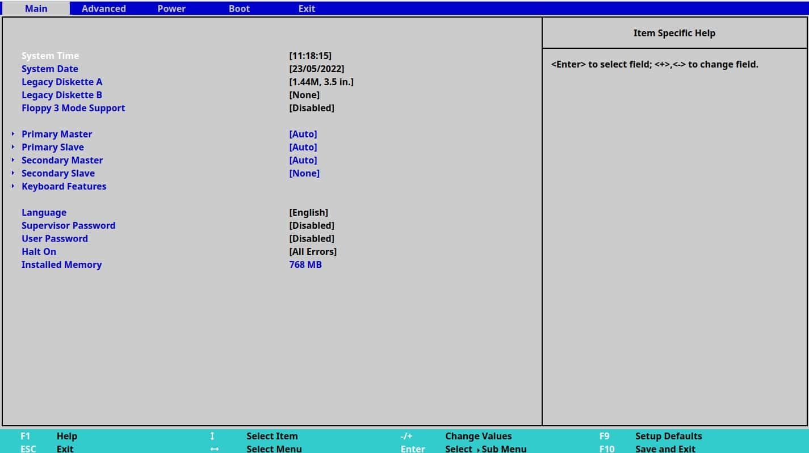
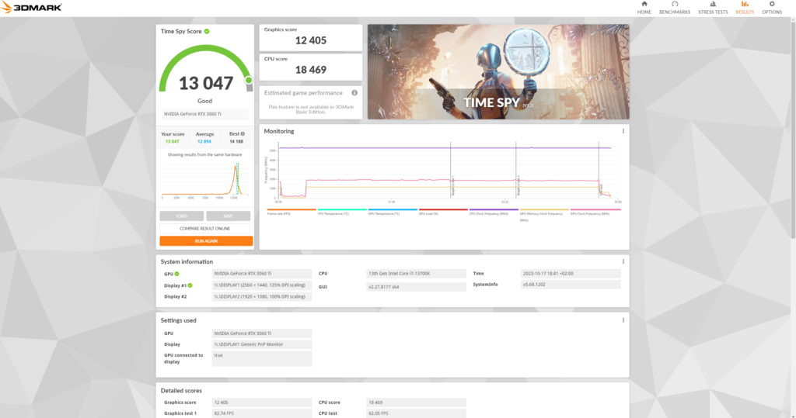

Hardware & Montage PC
Assemblage sur mesure, diagnostic et optimisation de performances.
Assemblage sur mesure
Passionné par le hardware, je réalise parfois des montages PC complets en sélectionnant les meilleurs composants selon les besoins et budgets (Gaming, Workstation ou Bureautique). J'accorde une importance particulière au cable management pour optimiser le flux d'air et l'esthétique.
Diagnostic & Réparation
Au-delà du montage, j'interviens aussi sur le dépannage matériel et logiciel. Remplacement de composants défectueux, changement de pâte thermique, mise à jour de BIOS ou réinstallation système, j'assure la remise en état de machines pour prolonger leur durée de vie.


Benchmarks & Tests
Et pour finir, je réalise des tests de stress et des benchmarks. Cela me permet de vérifier les températures, les tensions et de m'assurer que chaque configuration délivre son plein potentiel selon les besoins.